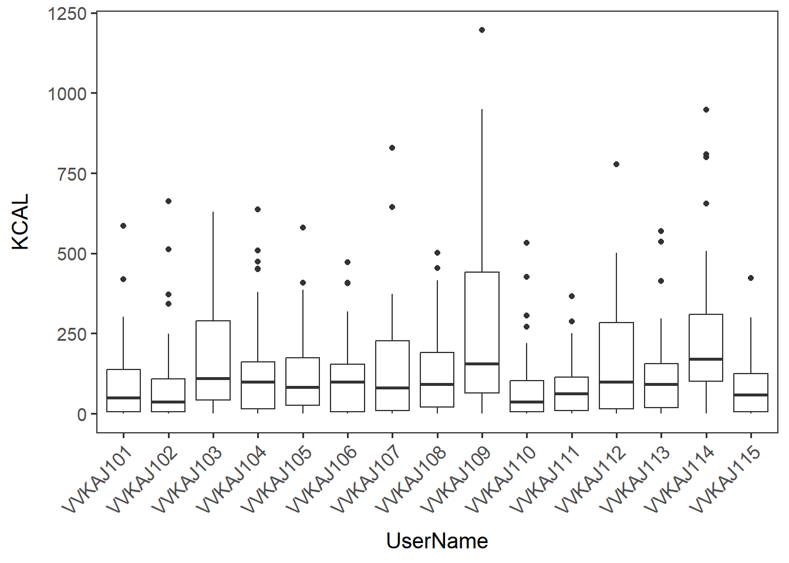
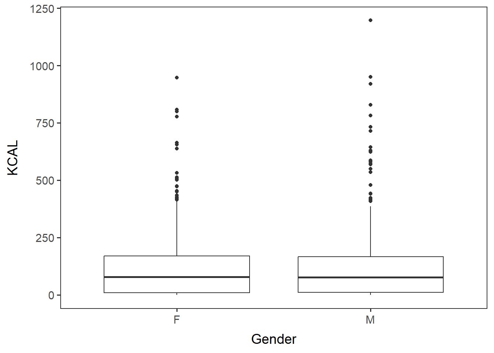
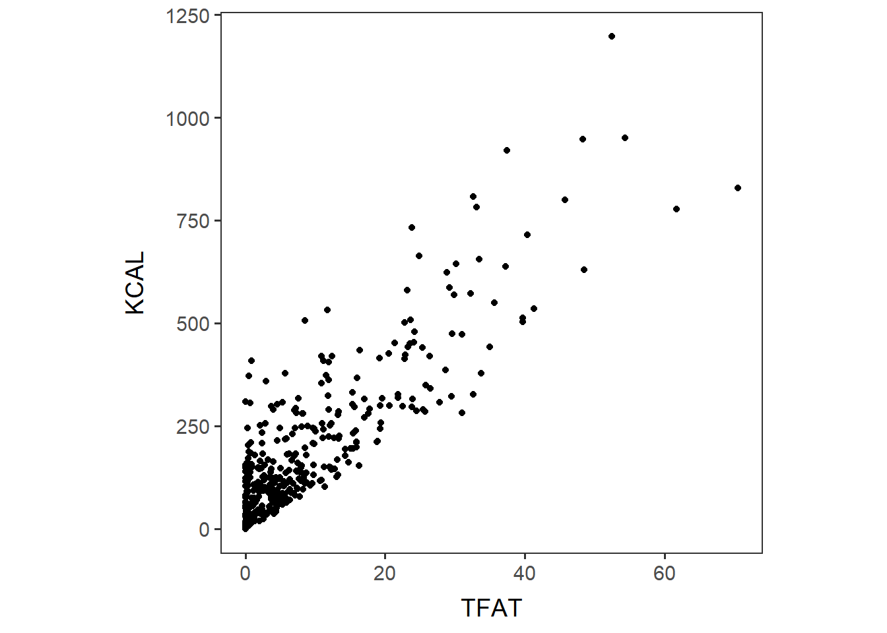
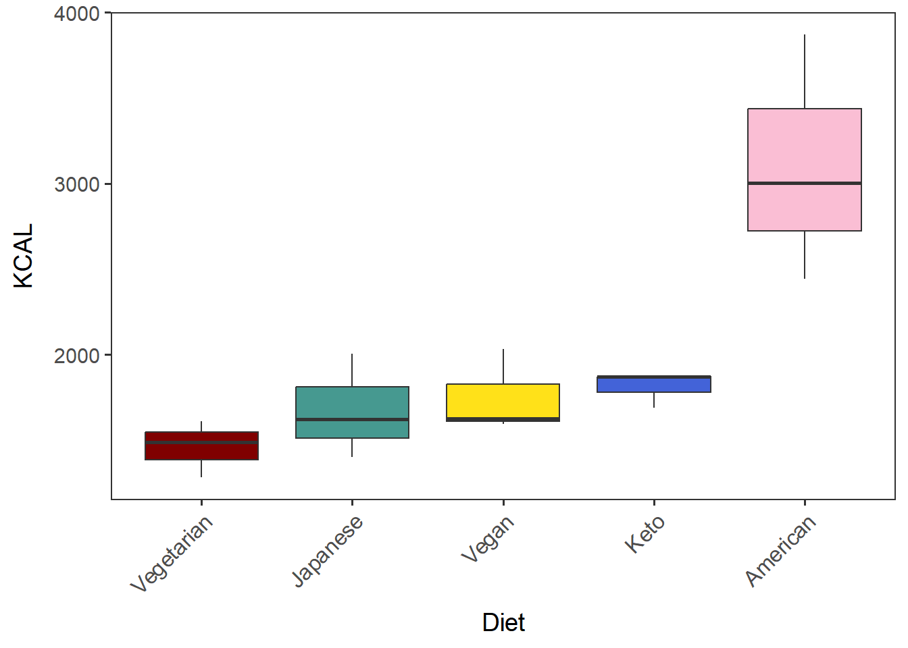
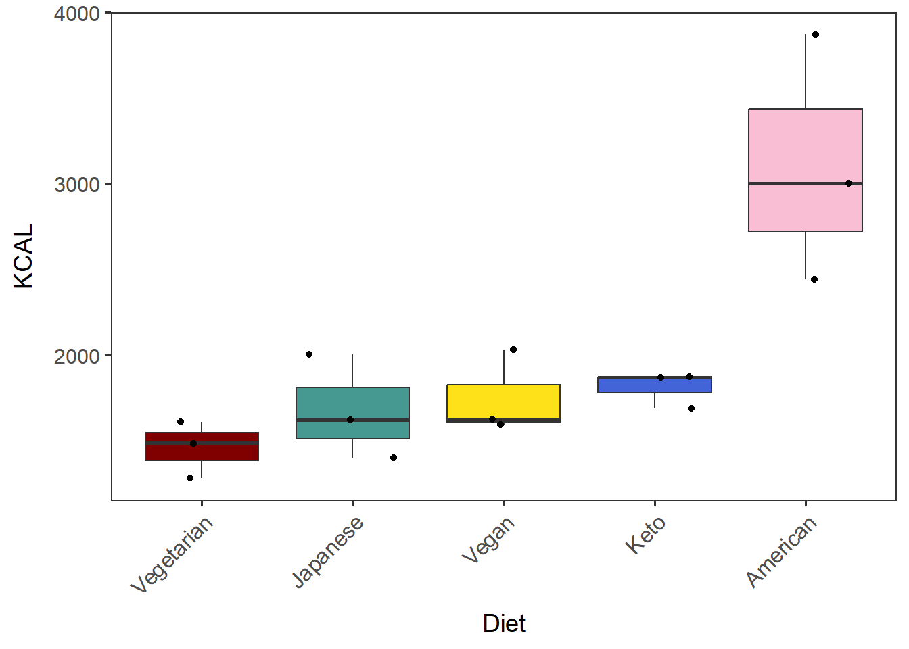
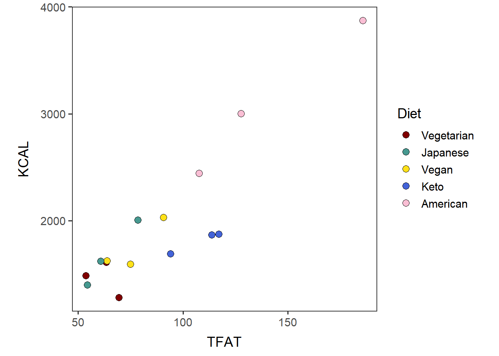

Data overview
Introduction
We can view summary statistics of either the individual food data or the totals data. First, let us take a look at theitems data. This section is not intended to be a complete guide to analysis, but rather to give you some ideas for how to explore this data.
Load functions and packages
Name the path to DietDiveR directory where input files are pulled.
main_wd <- "~/GitHub/DietDiveR"Load the necessary functions.
source("lib/specify_data_dir.R")
source("lib/data_overview.R")
source("lib/ggplot2themes.R")## Warning: package 'ggplot2' was built under R version 4.1.3Call color palette. distinct100colors.rda is an R data file that contains 100 distinct colors, and most of them are color-blind friendly.
distinct100colors <- readRDS("lib/distinct100colors.rda")Make a vector of colors for each factor of Diet so that plots will have consistent colors.
# Take the first five colors from distinct100colors.
diet_colors <- distinct100colors[1:5]
# Name each color.
names(diet_colors) <- c("Vegetarian", "Vegan", "Keto", "American", "Japanese")
# Specific colors are assigned to be used for each diet.
diet_colors## Vegetarian Vegan Keto American Japanese
## "#800000" "#FFE119" "#4363D8" "#FABED4" "#469990"You can come back to the main directory by:
setwd(main_wd)Load and analyze (QC-ed) ASA24 food items data
Specify the directory where the data is.
SpecifyDataDirectory(directory.name = "eg_data/VVKAJ")Load your items data to be analyzed.
“_f_id_s_m” stands for: “food names formatted”, “SampleID added”, “selected individuals”, “metadata merged”, and “the individuals that passed the QC of averaged totals”.
items_f_id_s_m <- read.delim("VVKAJ_Items_f_id_s_m_QCed.txt")Summary statistics
Summary statistics of one variable can be obtained by using R’s summary() function.
View min, quantiles, mean, etc. for a variable in your dataset.
summary(items_f_id_s_m$KCAL)## Min. 1st Qu. Median Mean 3rd Qu. Max.
## 0.00 10.03 76.80 130.15 167.78 1196.79To calculate these summary statistics for multiple variables, use the SummaryStats() function. Calculate the minimum, 1st quantile, median, mean, 3rd quantile, max, and standard deviation for each variable in the input dataframe and save as a .txt file.
SummaryStats(inputdf = items_f_id_s_m,
outfn = "VVKAJ_Items_f_id_s_m_summ.txt")The .txt should contain data shown below. Non-numeric variables are indicated as “not-numeric”.

[NOTE] These are individual items, not by user or day.
Boxplot
Generate a boxplot to view data distribution.
Boxplot of KCAL by users.
users_kcal <- ggplot(items_f_id_s_m, aes(x=UserName, y=KCAL)) +
geom_boxplot() + no_grid + space_axes + rotate_X_labels
users_kcal
Save it as a .pdf file.
ggsave("VVKAJ_Items_f_id_s_m_users_kcal.pdf", users_kcal,
device="pdf", width=6, height=4.6, units="in")Similarly, generate a boxplot of KCAL by gender.
gender_kcal <- ggplot(items_f_id_s_m, aes(x=Gender, y=KCAL)) +
geom_boxplot() + no_grid + space_axes
gender_kcal
Save it as a .pdf file.
ggsave("VVKAJ_Items_f_id_s_m_gender_kcal.pdf", gender_kcal,
device="pdf", width=3.5, height=4.6, units="in")Scatterplot
Scatterplots can be generated to look at the relationship between two numeric variables. Here we look at total fat and kilocalories. We would expect these values to be related because fat contributes a high number of calories in foods.
Scatterplot of two numeric variables: TFAT and KCAL.
TFAT_KCAL <- ggplot(items_f_id_s_m, aes(x=TFAT, y=KCAL)) +
geom_point() + no_grid + space_axes + theme(aspect.ratio = 1)
TFAT_KCAL
Save it as a .pdf file.
ggsave("VVKAJ_Items_f_id_s_m_TFAT_KCAL.pdf", TFAT_KCAL,
device="png", width=4.6, height=4.1, units="in")Test if the two variables are correlated.
The output should show p-value and R correlation coefficient.
cor.test(x=items_f_id_s_m$TFAT, y=items_f_id_s_m$KCAL, method="pearson")##
## Pearson's product-moment correlation
##
## data: items_f_id_s_m$TFAT and items_f_id_s_m$KCAL
## t = 47.825, df = 676, p-value < 2.2e-16
## alternative hypothesis: true correlation is not equal to 0
## 95 percent confidence interval:
## 0.8601666 0.8946724
## sample estimates:
## cor
## 0.8785608The output says the correlation coefficient of TFAT and KCAL is 0.8785608, and the p-value for it is 2.2 x 10-16.
Load and analyze (QC-ed) ASA24 mean totals data
Load your QC-ed mean totals data to be analyzed.
tot_mean_m_QCed <- read.delim("VVKAJ_Tot_mean_m_QCed.txt")Note that each row is the mean of total dietary intake of each user.
tot_mean_m_QCed[1:4, 1:4]## UserName FoodAmt KCAL PROT
## 1 VVKAJ101 1998.246 1611.101 54.53020
## 2 VVKAJ103 1808.167 1873.938 133.34506
## 3 VVKAJ105 2220.698 2005.860 133.32918
## 4 VVKAJ107 1755.088 1626.237 45.43402Summary statistics
Summary statistics of one variable.
summary(tot_mean_m_QCed$KCAL)## Min. 1st Qu. Median Mean 3rd Qu. Max.
## 1283 1603 1691 1961 2019 3871Calculate the min, quantiles, mean, etc. for a variable in your dataset in the same way we did with the items.
SummaryStats(inputdf = tot_mean_m_QCed,
outfn = "VVKAJ_tot_mean_m_QCed_summ.txt")Boxplot
Create a vector named “Diet_by_median” containing the Diet in a desired order (by median in this case).
Diet_by_median <- with(tot_mean_m_QCed,
reorder(Diet, KCAL, median, na.rm=T))Diet_by_median is a factor, which contains the diets of all the 15 participants and the median values of each Diet group. “Levels” show the order of them.
Diet_by_median## [1] Vegetarian Keto Japanese Vegan American Vegetarian
## [7] Keto Japanese Vegan American Vegetarian Keto
## [13] Japanese Vegan American
## attr(,"scores")
## American Japanese Keto Vegan Vegetarian
## 3002.664 1621.649 1869.665 1626.237 1486.866
## Levels: Vegetarian Japanese Vegan Keto AmericanShow the levels of this factor. This will be useful in plotting a factor in a desired order.
levels(Diet_by_median)## [1] "Vegetarian" "Japanese" "Vegan" "Keto" "American"Generate a boxplot of KCAL by diet of the participants.
diet_KCAL_t <- ggplot(tot_mean_m_QCed, aes(x=Diet_by_median, y=KCAL, fill=Diet_by_median)) +
geom_boxplot() + labs(x="Diet") +
theme(legend.position = "none") + # hide legend
scale_fill_manual(values=diet_colors) +
no_grid + space_axes + rotate_X_labels
diet_KCAL_t
Save it as a .pdf file.
ggsave("VVKAJ_tot_mean_m_QCed_diet_KCAL.pdf", diet_KCAL_t,
device="pdf", width=5, height=4.5)Boxplot of KCAL by Diet, with each datapoint.
[Note]
geom_boxplotmust have outlier.shape = NA when plotted with geom_jitter. Otherwise, outlier points will be duplicated and will be misleading.
diet_KCAL_t_dots <- ggplot(tot_mean_m_QCed, aes(x=Diet_by_median, y=KCAL, fill=Diet_by_median)) +
geom_boxplot(outlier.shape = NA) + labs(x="Diet") +
geom_jitter(width=0.3) +
theme(legend.position = "none") + # hide legend
scale_fill_manual(values=diet_colors) +
no_grid + space_axes + rotate_X_labels
diet_KCAL_t_dots
Save it as a .pdf file.
ggsave("VVKAJ_tot_mean_m_QCed_diet_KCAL_dots.pdf", diet_KCAL_t_dots,
device="pdf", width=5, height=4.5)Scatterplot
Generate a scatterplot of two variables, color-coded by Diet.
Show the diets in the order of median, based on the boxplot that was generated above.
TFAT_KCAL_t <- ggplot(tot_mean_m_QCed, aes(x=TFAT, y=KCAL, fill=Diet_by_median)) +
geom_point(shape=21, size=3, color="black") + no_grid + space_axes +
# order "diet_colors" in the same way as the level order of Diet_by_median.
scale_fill_manual(values= diet_colors[levels(Diet_by_median)]) +
labs(fill="Diet") + theme(aspect.ratio = 1)
TFAT_KCAL_t
Save it as a .pdf file.
ggsave("VVKAJ_tot_mean_m_QCed_TFAT_KCAL.pdf", TFAT_KCAL_t, device="pdf",
width=5.5, height=4)Test if the two variables are correlated.
The output should show the p-value and R correlation coefficient.
cor.test(x=tot_mean_m_QCed$TFAT, y=tot_mean_m_QCed$KCAL, method="pearson")##
## Pearson's product-moment correlation
##
## data: tot_mean_m_QCed$TFAT and tot_mean_m_QCed$KCAL
## t = 7.6702, df = 13, p-value = 3.534e-06
## alternative hypothesis: true correlation is not equal to 0
## 95 percent confidence interval:
## 0.7321677 0.9683415
## sample estimates:
## cor
## 0.9049994Come back to the main directory before you start running another script.
setwd(main_wd)